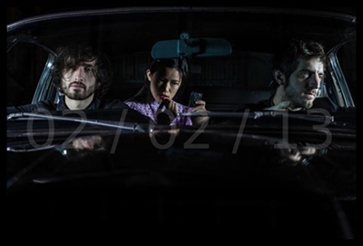
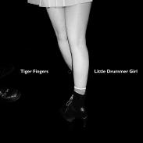
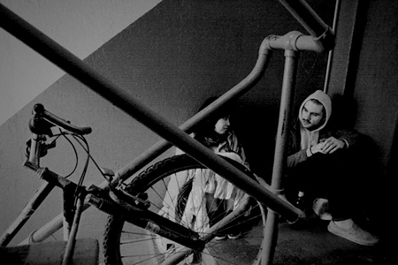
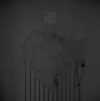
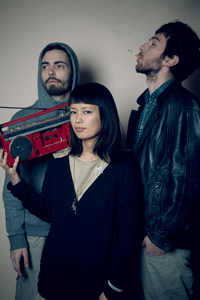
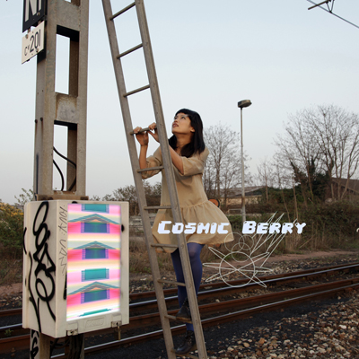

Cosmic Berry's
Bandcamp * Facebook
contact*+.+*

News : 2012-2013
Cosmic Berry's first offical release "Static Juice" from french label Laybell on February 4th******
Including great remixes by Silje Nes, Black Light Smoke, LIFE&LIMB, GRIFON
and My Favourite Things!!!!!
along with music video "Round & Low" by Flashbacker!
Cosmic Berry "Round & Low" from Maxime Lethelier on Vimeo.
Asako Started to sing on french Mathrock band from Lille Ed Wood Jr
New songs and gig is scheduled!

Album of Tiger Fingers out from hfn!!
Hamburg label, hfn is releasing Asako's past project from brooklyn, Tiger Fingers single Little Drummer Girl + remixes by Jimmy Edgar and Night Plane *****



Live video of Cosmic Berry from Japan Tour,
Jun 30 Villa Kujoyama Kyoto!
2nd album of two.left.ears, " *divAAAtion*" has been released with Asako's voice samples.
Live dates are been scheduled also with featurling vocal of old and new songs!
 
Cosmic Berry's bandcamp*****



1st concert of Cosmic Berry was March 2012.
Benefit event for Japan MARAIS OUEST, Paris
: Music
Solo Project |
|
New solo electronica/pop project |
|
| Sound composition for multimedia | |
Old solo ambient & electropop project |
|
..........................................................
Bands & Collaborations |
|
Glitch Hiphoptronica(Marseille/Paris/Lille) |
|
| Electro Mathrock (Lille/Paris) | |
Electro Pop duo(Brooklyn/Paris) |
|
Folktoronica band(Brooklyn/Paris) |
|
Ambient electronica duo(NYC) |
Dorako |
| David Last | |
Electro Rock band(NYC) |
|
Analog Synth Pop band(NYC) |
|
Live Drum N'Bass duo(NYC) |
|
Electronic pop/techno duo(NYC) |
|
Experimental Rock band(NYC) |
|
Industrial Noise Rock duo(NYC/Paris) |
|
Multimedia projects(NYC) |
|
Multimedia live performance group(Basel) |
|
........................................................
: Official Promotion Videos
Tiger Fingers "Small Talk" by Flashbacker
"Dreaming Octopus" Windy Hill Mill by Flashbacker
"Je Reviendrai" Dorako by Flashbacker
"Hit & Run" Windy Hill Mill by Flashbacker
"Walking" Dead Radar by Ken Shadford
..........................................................
: Extra, Etcetera,,,
Asako helped flashbacker to make fan video of "Wanda" We Are Enfant Terrible ;)
Asako & Flashbacker did inside artwork for song "FireFox 38000"
from Shiko Shiko's New Album Best New Bestiole**
Asako won the Shiko Shiko's "OHAYÔ RECOOKED" cover remix degsin contest:))))